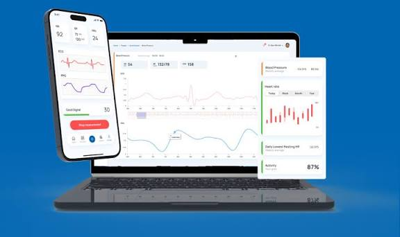
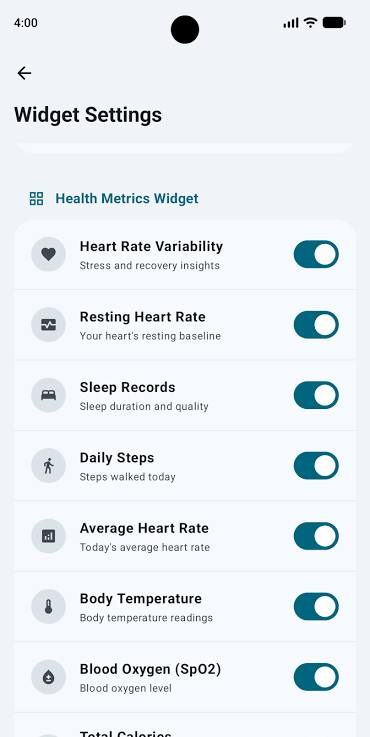
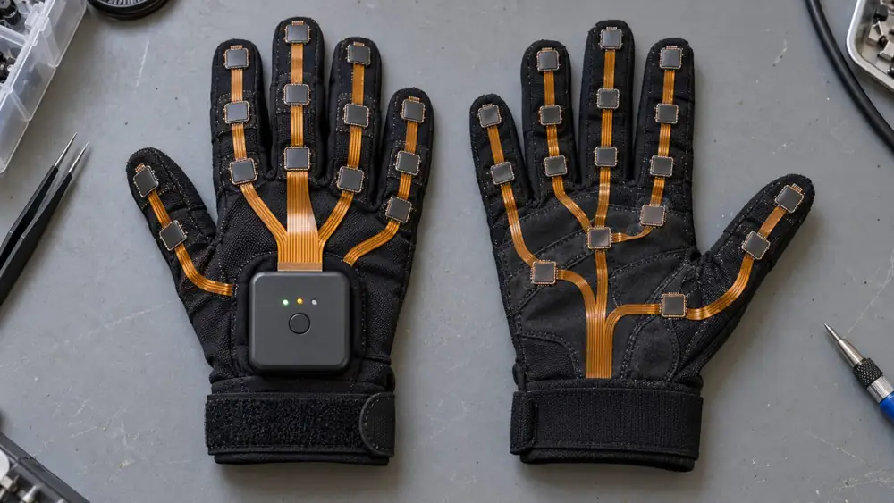
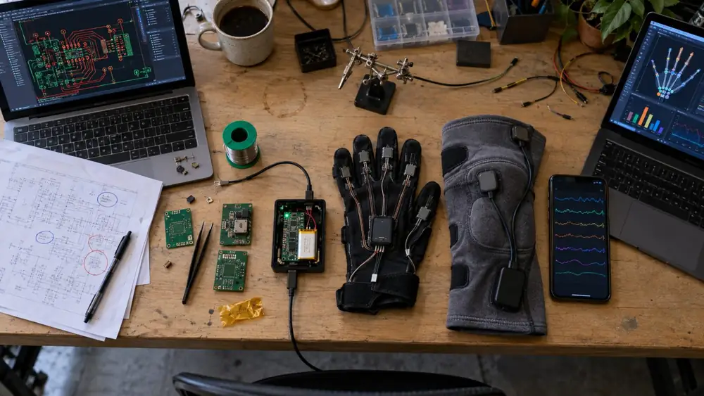

Product manager for connected devices, mobile apps and AI
I build products where an app, a device, a cloud and an AI model have to work as one: from a smartwatch that estimates blood pressure, to a smart glove I designed down to the circuit board, to AI agents that run a clinic's patient flow. Electrical engineer by training, M.Sc. in Computer Science (AI), PMP. Based in North Vancouver.
Case study 01 · Connected device, mobile app, cloud AI
Cuffless blood pressure on a smartwatch
A real product: iOS, Android and web apps that paired with a third-party watch over Bluetooth, calibrated each user against a standard cuff, and used a cloud AI model to estimate blood pressure from ECG and PPG signals.
Amir Pournajib, PMPProduct Manager, HealthGaugeNov 2019 to Oct 2022

Walk through the system
From the watch to a number people trust
ECG: electrical heart signal. PPG: optical pulse signal from the watch's light sensor. PTT (pulse transit time) and PAT (pulse arrival time): how long the pulse takes to travel, which changes with blood pressure. The phone screens are illustrations with example values, not the original app.
PlatformsiOS, Android, web app
DeviceThird-party smartwatch over Bluetooth
UsersA few hundred consumers and research participants
Team5 to 10 engineers: mobile, firmware, cloud, data science
The product
What users and researchers actually used
Measure on the phone, review on the web
The phone shows heart rate, blood pressure and HRV with live ECG and PPG traces and a signal-quality bar during each measurement. The web dashboard shows blood pressure history, the raw signals behind each reading, heart rate trends, daily lowest resting heart rate and activity, for users and research teams.

Users choose what matters to them
Home-screen widgets for HRV, resting heart rate, sleep, steps, temperature, blood oxygen and more, each one switched on or off by the user.
Product images from the HealthGauge website.
How I work
Hands-on engineer, accountable product manager
Hands-on
I understand how it works under the hood
Electrical engineer by training, M.Sc. in Computer Science (AI). I read ECG and PPG signals and the timing features (PTT, PAT) the model used.
Worked directly with firmware, mobile, cloud and data science engineers on Bluetooth pairing, data sync and model inputs.
At Texavie I designed a sensor hub myself, from schematic and PCB layout to the enclosed product.
Product
I own the outcome, not just the backlog
Owned MVP scope, the calibration flow, the roadmap, and pilot requirements.
Worked closely with our UI designer on screens and user flows, from first sketches to the final design.
Ran one roadmap across watch, phone, web, cloud and AI, so every release worked end to end.
Measured success with evidence partners trust: a 200-person university pilot that helped secure $2M.
CLOUDMicrosoft AzureAWSDELIVERYJiraConfluenceDESIGNFigma, with UI designersCOMPLIANCEHIPAAPIPEDA
Results
~90%
Blood pressure prediction accuracy in internal testing
~200
Participants in a university research pilot
$2M
Funding the product and pilot results helped secure
Where these lessons apply next
How this maps to a connected-vehicle app
A vehicle app is a companion app for a very large device. The hard parts are the ones I worked on: an unreliable link, data people need to trust, and a cloud in the middle.
What I dealt with
The same problem in a vehicle app
What I would measure
Keeping the watch paired, especially on Android
→Phone as key and vehicle connection across many phone brands
Connection success rate by OS and phone model
Sync gaps that made readings look unreliable
→Stale vehicle status: charge, range, lock state
Data freshness and how clearly the app shows it
A cloud round trip before every prediction
→Remote commands that travel through the cloud and wake the vehicle
Command latency and success rate
A weekly calibration step users had to complete
→Onboarding and account setup
Completion rate and time to first value
Sensitive health data, stored in Canada, HIPAA and PIPEDA
→Location and vehicle data that owners expect to stay private
Permission opt-in and clear privacy controls
One roadmap across watch, phone, web, cloud and data science
→Many domain teams contributing to one owner app
Consistent navigation and patterns across features
My role
Decisions I owned
STEP 01
MVP scope
Decided what the first version needed to prove for users and the research pilot, and what could wait.
STEP 02
Calibration flow
Designed with our UI designer how users calibrate against a standard cuff each week, so the model stays personal without becoming a chore.
STEP 03
Roadmap
Ran one roadmap across watch integration, mobile, web, cloud and the data science model.
STEP 04
Pilot and partner needs
Turned the university pilot's research requirements into product requirements the team could build and test.
What I learned
Lessons I bring to connected products
The connection is the product
Users judge the whole system by whether their data shows up.
AI needs a routine around it
A simple weekly calibration step kept predictions personal and credible.
Show how fresh the data is
A clear "last synced" state builds more trust than a number with no context.
Privacy comes first
HIPAA, PIPEDA and storing data in Canada shaped the architecture from day one.
Case study 02 · Hardware, firmware, AI
Smart glove and knee sleeve sensor hub
A washable smart glove and knee sleeve that track hand, finger and knee movement for rehab clinics, athletes, researchers and consumers. I led the hardware and firmware team and designed the hub that turns 32 sensor channels into data on a phone.
Technical Product Manager, Hardware and Firmware LeadTexavie, VancouverOct 2022 to Mar 2024Team of 10 to 20

The glove: hub on the back of the hand, sensors at the fingertips, joints and palm.

From schematic and PCB to glove, knee sleeve, phone data and AI hand model.
Concept illustrations generated with AI from my own description of the product. They are not photos of the original hardware.
The hub I designed
From textile sensors to AI insight
Diagram drawn from my own design. The push button and LEDs sit in the center of the board so they line up with the enclosure.
5,000
Units in the production run, taken through stage-gate reviews from concept to pilot builds
ConceptDesignVerifyPilotProduction
−25%
Delivery delays, by coordinating electronics, firmware, mechanical, suppliers and manufacturing
BeforeAfter
32
Sensor channels streamed over Bluetooth Low Energy from one battery-powered hub
Hands-on
What I built
Designed the hub from schematic and PCB layout to the final enclosed product.
Chose the architecture: a Nordic nRF module as the brain, two SPI ADCs reading 32 channels through one flat connector.
Added humidity and temperature sensing to protect the electronics in a washable wearable.
Product
The trade-offs I owned
Bluetooth data rate against battery life: enough data for the AI models, enough battery for a full session.
Manufacturing and suppliers: moving from prototypes to a 5,000-unit run through part lead times and pilot builds.
One product for four audiences: rehab clinics, athletes, researchers and consumers.
In the news
The smart glove from the UBC and Texavie team was published in Nature Machine Intelligence. Its machine learning models predicted finger and wrist joint angles with at least 99% accuracy, matching camera-based motion capture, and it was tested with stroke survivors in rehabilitation.
AI agents that run a fertility clinic's patient flow
My Fertility Labs offers fertility care in person and online, with doctors, nurse practitioners, pharmacists, nutritionists and coaches. I led AI and mobile product: agents that take a patient from intake to the right clinician, through lab work, and back, with a clinician always reviewing.
Senior Technical Product Manager, AI and MobileMy Fertility Labs, AlbertaApr 2024 to 2026Team of 5 to 10
The agent workflow
Every handoff that used to be manual
Agents built with Microsoft Copilot alongside our LLM and RAG (AI that answers from the clinic's own documents) features. Diagram drawn from my own description of the system.
10 wks
From idea to a live AI intake and document automation MVP
Week 1Live
−40%
Manual triage time for clinic staff
BeforeAfter
31 → 47
Net Promoter Score after launch
Hands-on
What I built
Built AI agents with Microsoft Copilot for intake, routing, follow-ups and lab results.
Owned LLM, RAG and agent features in the iOS and Android patient app and the clinic platform.
Worked on EMR (electronic medical record) integrations so agents fit the clinics' existing systems.
Worked with our UI designer on the patient app and clinic screens, so AI suggestions were clear and easy to review.
Product
The hard parts
Trust: clinicians review every clinical decision, so the AI speeds work up without taking control.
Privacy: sensitive health data under HIPAA and PIPEDA, with compliance involved from the first design.
Adoption: four user groups (patients, clinicians, clinic staff and lab partners) across several clinic locations.
BUILT WITHMicrosoft CopilotMicrosoft AzureHIPAAPIPEDA
Public record
My Fertility Labs was a 2025 Women in Innovation finalist at the ASTech Awards, which list me as the company's tech lead for AI and mobile.